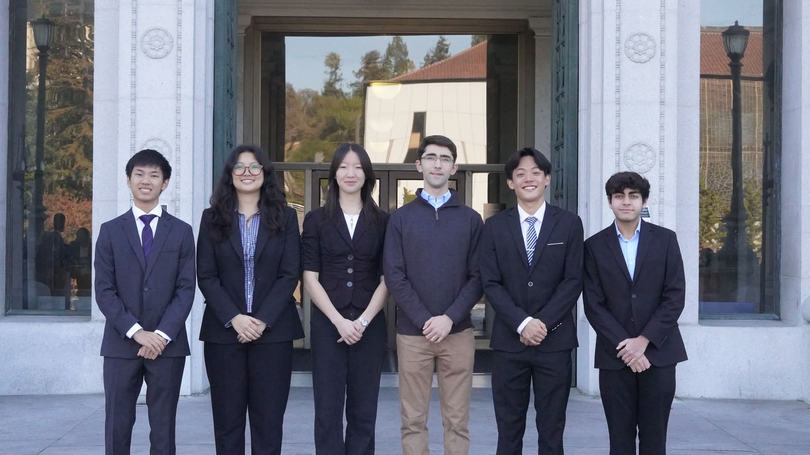

Homing and backlash compensation for a space camera focus actuator: 12.96 mil of travel at about 4.9 nm per step, with every 1 mil test move within ±0.2 mil.
Electrical and Software Engineering Consultant · Malin Space Science Systems, via Engineering Solutions at Berkeley · Sept 2025 to Dec 2025

The goal
A camera focuses by moving a lens a tiny distance. Screws and gears have slack, so the lens lands in a slightly different spot depending on which way it moved. My job was the electronics and code that take that slack out.
What I did
As a team, we worked with Malin Space Science Systems through Engineering Solutions at Berkeley to design a focus actuator for space camera applications used primarily in NASA rovers. We evaluated several actuation approaches before settling on a mechanical design, with a heavy emphasis on fatigue resistance and product lifetime, then built a working prototype and tested it for positional accuracy and repeatability.
My work on this project was the control systems and algorithms. A stepper run open loop drifts, because backlash makes the element land in a slightly different place depending on which direction it approached from, so the firmware had to measure that error rather than assume it away. The system ran a DRV8834 stepper driver in microstepping mode, with limit switches at each end of travel providing an absolute home reference and a ratiometric Hall sensor giving continuous position feedback. I developed a bidirectional homing and midpoint-referencing algorithm using the DRV8834 microstepped motor, dual limit switches, and a median-filtered Hall sensor to measure and compensate for mechanical backlash. The finished prototype delivered 12.96 mil of travel against a ±2 mil range spec (3.2x the range), at about 4.9 nm per step. The midpoint is found from the median of 25 hall readings taken 10 µs apart, and the firmware measures backlash, about 250 steps, and recalibrates it every 5 cycles.
I validated the electronics across 3 printed builds and a CNC-machined build, calibrating steps against actual displacement, testing median filtering on the Hall signal, checking limit switch reliability over repeated actuations, and verifying that the backlash compensation removed the direction dependent error. Positioning was validated across 84 test runs measured with a dial indicator accurate to 0.0002 in. All 40 trials of 1 mil moves landed within ±0.2 mil, 2.5x tighter than the 0.5 mil increment spec, with mean error under 0.03 mil in both directions.
Results
- 12.96 mil of travel against a ±2 mil range spec (3.2x the range), at about 4.9 nm per step
- About 250 steps of mechanical backlash measured and compensated
- All 40 trials of 1 mil moves within ±0.2 mil, 2.5x tighter than the 0.5 mil increment spec, across 84 total test runs
- Mean error under 0.03 mil in both directions
No pictures or additional information due to NDA.